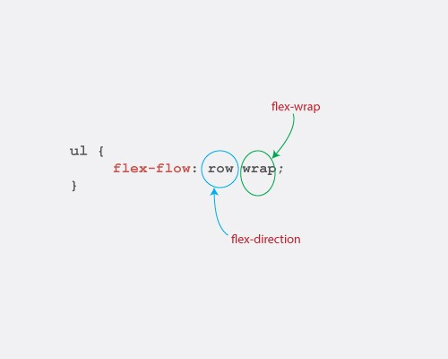
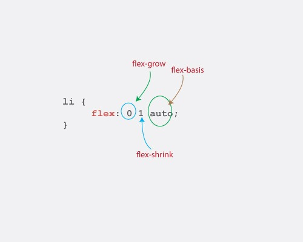

原始社会
- table
- margin
- float
- display:table
问题是？
产品需求：
- 这个改成从右到左排列吧
- 上下布局改成左右布局吧
- 一行多放几列看看
Flexbox是什么？
Flexbox模块提供了一个有效的布局方式，即使不知道视窗大小或者未知元素情况之下都可以智能的，灵活的调整和分配元素和空间两者之间的关系。
如何使用Flexbox？
- 伸缩容器（Flex Container):父元素显式设置了display:flex/inline-flex
- 伸缩项目（Flex Items):伸缩容器内的子元素
伸缩容器属性
flex-direction:这个主要用来创建主轴，从而定义了flex 项目放置在伸缩容器的方向
- row(默认值)：在“ltr”排版方式下从左向右排列；在“rtl”排版方式下从右向左排列
- row-reverse：与row排列方向相反，在“ltr”排版方式下从右向左排列；在“rtl”排版方式下从左向右排列
- column: 类似于row，不过是从上到下排列
- column-reverse: 类似于row-reverse，不过是从下到上排列。
伸缩容器属性
flex-wrap:单行还是多行显示，侧轴的方向决定了新行堆放的方向
- nowrap(默认值)：伸缩容器单行显示
- wrap：伸缩容器多行显示
- wrap-reverse: 伸缩容器多行显示,方向与wrap相反
伸缩容器属性
flex-flow: 是“flex-direction”和“flex-wrap”属性的缩写版本

伸缩容器属性
justify-content: 主要定义了伸缩项目在主轴上的对齐方式
- flex-start(默认值): 让所有伸缩项目向主轴开始方向对齐
- flex-end: 让所有伸缩项目向主轴结束方向对齐
- center：居中对齐
- space-between：伸缩项目会平均地分布在行里。让除了第一个和最后一个伸缩项目，其余伸缩项目的两者间间距相同
- space-around: 伸缩项目会平均地分布在行里，两端各保留一半的空间
伸缩容器属性
align-items: 主要定义了伸缩项目在侧轴上的对齐方式
- flex-start: 让所有伸缩项目向侧轴开始方向对齐
- flex-end: 让所有伸缩项目向侧轴结束方向对齐
- center：在侧轴上居中对齐
- baseline：伸缩项目根据他们的基线对齐
- stretch(默认值): 伸缩项目拉伸填充整个伸缩容器
伸缩容器属性
align-content: 会更改flex-wrap行为，它是用来对齐伸缩行的
- flex-start: 各行向伸缩容器侧轴起点位置堆叠
- flex-end: 各行向伸缩容器侧轴结束位置堆叠
- center：各行向伸缩容器侧轴中间位置堆叠
- space-between：各行在伸缩容器中平均分布
- space-around: 各行在伸缩容器中平均分布，两端各保留一半的空间
- stretch(默认值): 各行将会伸展以占用额外的空间
伸缩项目属性
order: 默认情况下，伸缩项目是按照文档流出现先后顺序排列。然而，“order”属性可以控制伸缩项目在他们的伸缩容器出现的顺序
- order: integer(用整数值来定义排列顺序，数值小的排在前面。可以为负值。默认值为：0)
伸缩项目属性
flex-grow: 定义伸缩项目的扩展能力
- flex-grow:(number) (不允许为负值 默认值为： 0)
伸缩项目属性
flex-shrink: 定义伸缩项目的收缩能力
- flex-shrink: (number) (不允许为负值 默认值为： 1)
伸缩项目属性
flex-basis: 设置伸缩基准值
- flex-basis: (length) | auto (默认值为： auto)
伸缩项目属性
flex: flex-grow、flex-shrink和flex-basis三个属性的简写

伸缩项目属性
align-self: 在单独的伸缩项目上覆写默认的对齐方式
- auto(默认值): 继承父元素的align-items值，如果没有父元素则设置为stretch
- flex-start: 让目标项目对齐到侧轴开始的位置
- flex-end: 让目标项目对齐到侧轴结束的位置
- center：让目标项目在侧轴上居中对齐
- baseline：将目标项目沿着基线对齐
- stretch: 将目标项目在侧轴方向上拉伸，填满可用空间
绝对和相对伸缩
- 相对伸缩: 以项目内容大小为基准值伸缩
- 绝对伸缩: 以0为基准值开始伸缩
margin:auto
在伸缩项目上使用margin：auto 值为auto的方向会占据所有剩余空间